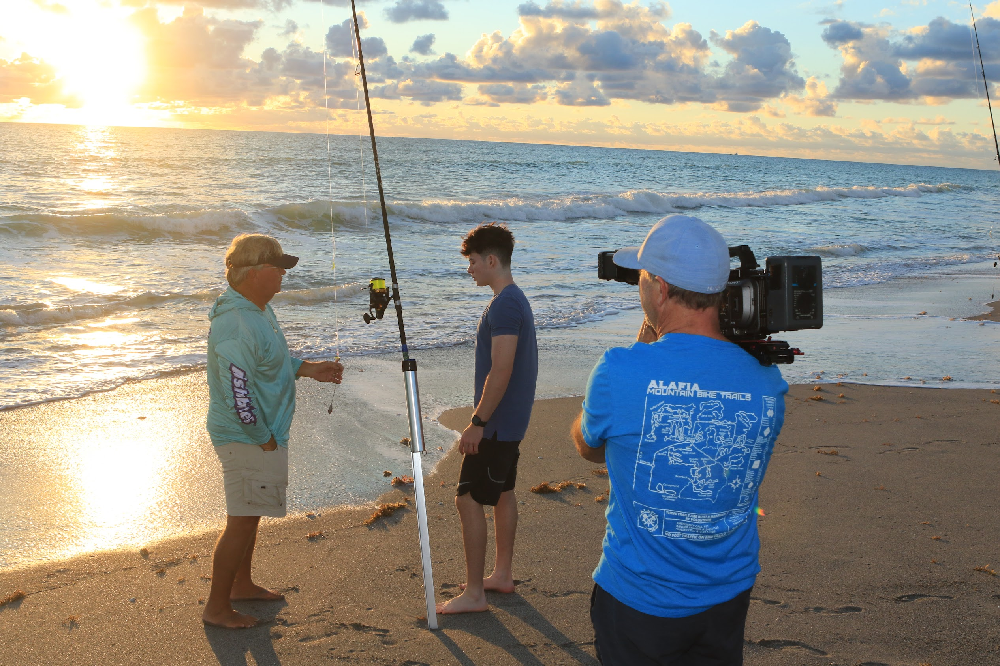
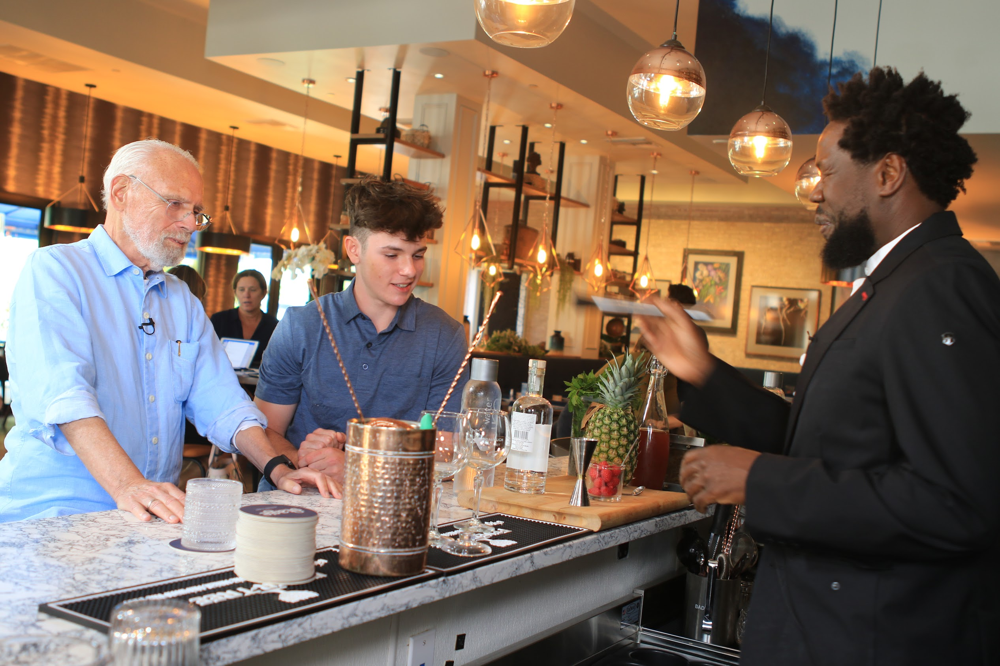
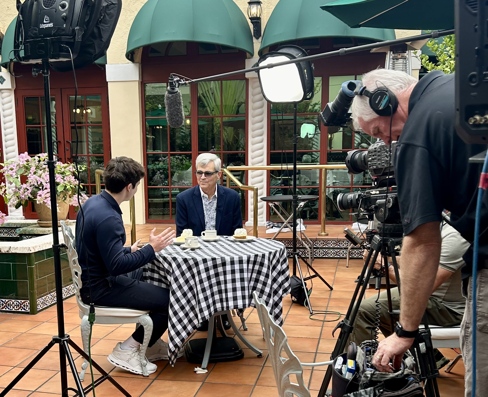
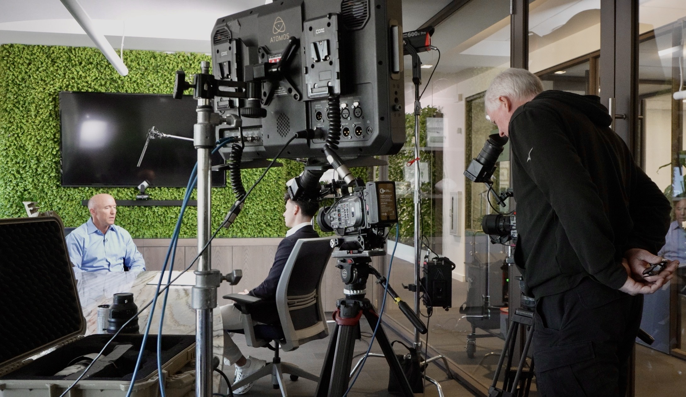
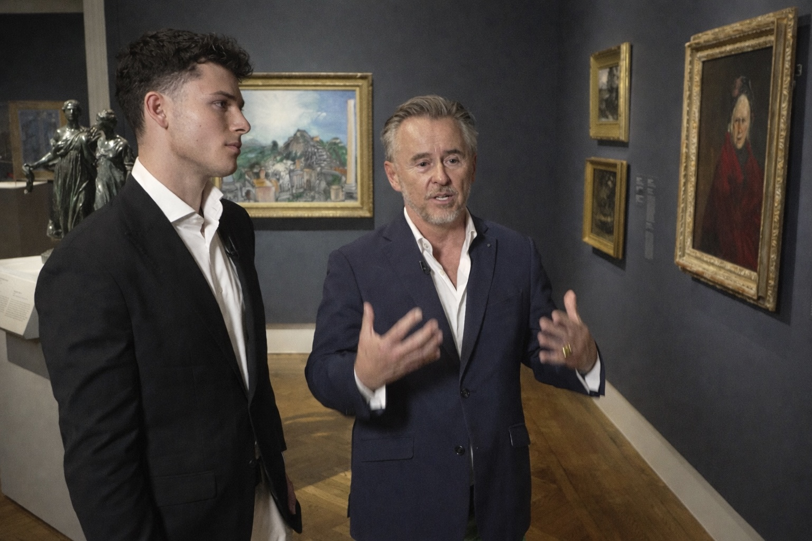

Travels & Traditions is the highest rated travel series on American public television — described by The New York Times as “the best food, travel, and cultural history shows on television.” Each episode explores the history, culture, and traditions of remarkable places around the world. Now in its 24th season, the series continues a legacy of thoughtful, story-driven travel programming built over five decades by my father, Burt Wolf.



